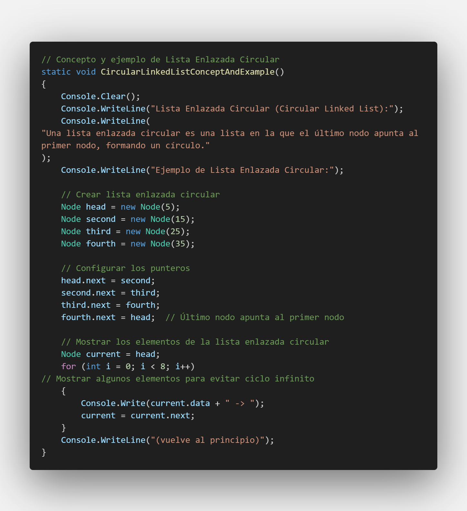
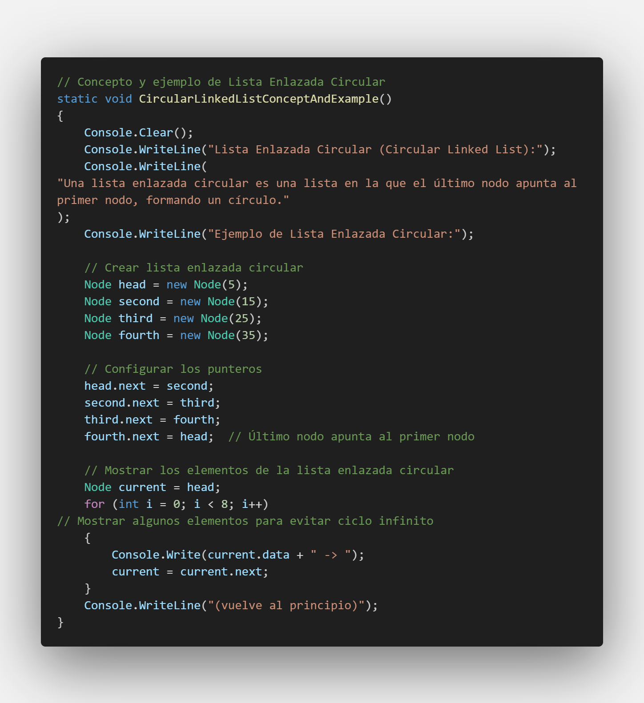

Lista Circular Enlazada
Una lista circular enlazada es una lista donde el último nodo apunta al primer nodo, formando un círculo.
5 -> 15 -> 25 -> 35 -> 5 -> 15 -> 25 -> 35 -> (vuelve al principio)
Una lista circular enlazada es una lista donde el último nodo apunta al primer nodo, formando un círculo.
5 -> 15 -> 25 -> 35 -> 5 -> 15 -> 25 -> 35 -> (vuelve al principio)